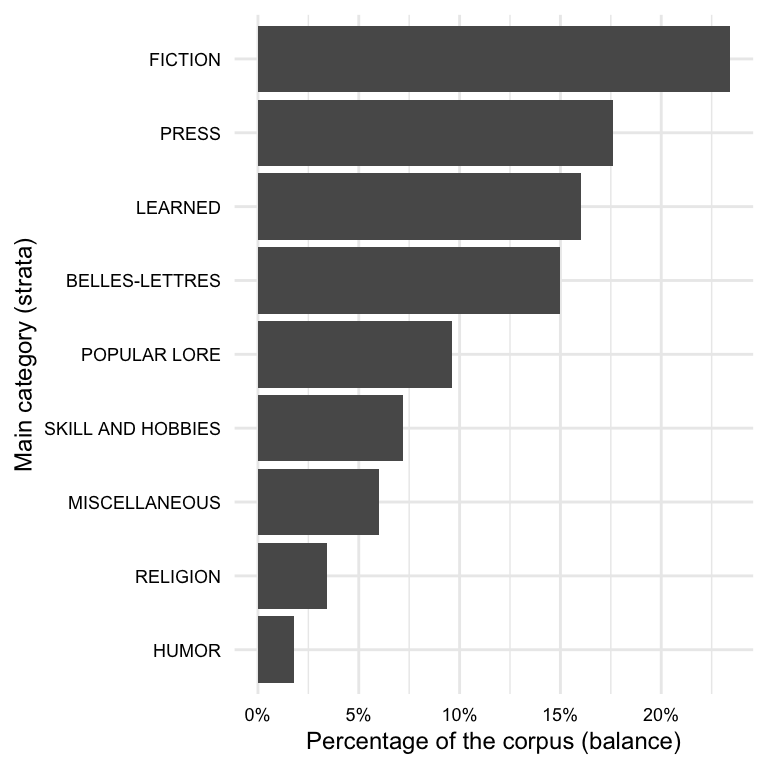
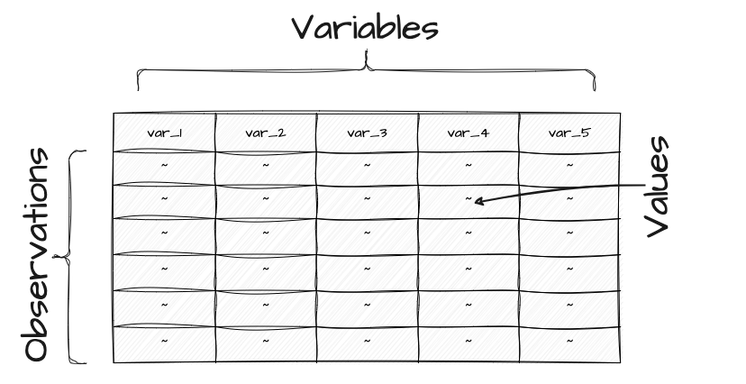

2 Understanding data
Draft
Ready for review.
The goal is to turn data into information, and information into insight.
— Carly Fiorina
In this chapter, the groundwork is laid for deriving insights from text analysis by focusing on content and structure of data and information. The concepts of populations and samples are introduced, highlighting their similarities and key differences. Connecting these topics to text analysis, language samples, or corpora, are explored, discussing their types, sources, formats, and ethical considerations. Subsequently, key concepts in creating information from data, such as organization and transformation, are examined. Finally, the importance of documentation in quantitative research is emphasized through addressing data origin and data dictionaries.
2.1 Data
Data is data, right? The term ‘data’ is so common in popular vernacular it is easy to assume we know what we mean when we say ‘data’. But as in most things, where there are common assumptions there are important details that require more careful consideration. Let’s turn to the first key distinction that we need to make to start to break down the term ‘data’: the difference between populations and samples.
2.1.1 Populations
The first thing that comes to many people’s mind when the term population is used is human populations (derived from Latin ‘populus’). Say for example we pose the question –What’s the population of Milwuakee? When we speak of a population in these terms we are talking about the total sum of individuals living within the geographical boundaries of Milwaukee. In concrete terms, a population an idealized set of objects or events in reality which share a common characteristic or belong to a specific category. The term to highlight here is idealized. Although we can look up the US Census report for Milwaukee and retrieve a figure for the population, this cannot truly be the population. Why is that? Well, whatever method that was used to derive this numerical figure was surely incomplete. If not incomplete, by the time someone recorded the figure some number of residents of Milwaukee moved out, moved in, were born, or passed away. In either case, this example serves to point out that populations are not fixed and are subject to change over time.
Likewise when we talk about populations in terms of language we dealing with an idealized aspect of linguistic reality. Let’s take the words of the English language as an analog to our previous example population. In this case the words are the people and English is the grouping characteristic. Just as people, words move out, move in, are born, and pass away. Any compendium of the words of English at any moment is almost instananeously incomplete. This is true for all populations, save those relatively rare cases in which the grouping characteristics select a narrow slice of reality which is objectively measurable and whose membership is fixed (the complete works of Shakespeare, for example).
In sum, (most) populations are amorphous moving targets. We subjectively hold them to exist, but in practical terms we often cannot nail down the specifics of populations. So how do researchers go about studying populations if they are theoretically impossible to access directly? The strategy employed is called sampling.
2.1.2 Samples
A sample is the product of a subjective process of selecting a finite set of observations from an idealized population with the goal of capturing the relevant characteristics of the target population. The degree of representativeness of a sample is the extent to which the sample reflects the characteristics of the population. The degree of representativeness is crucial for research as it directly impacts of any findings based on the sample.
To maximize the representativeness of a sample, researchers employ a variety of strategies. One of the first and sometimes the easiest strategy is to increase the sample size. A larger sample will always be more representative than a smaller sample. Sample size, however, is often not enough. It is not hard to imagine a large sample which by chance captures only a subset of the features of the population. Another step to enhance sample representativeness is to apply random sampling. Together a large random sample has an even better chance of reflecting the main characteristics of the population better than a large or random sample. But, random as random is, we still run the risk of acquiring a skewed sample (i.e. a sample with low representativeness).
To help mitigate these issues, there are two more strategies that can be applied to improve sample representativeness. Note, however, that while size and random samples can be applied to any sample with few assumptions about internal characteristics of the population, these next two strategies require decisions depend on the presumed internal characteristics of the population.
The first of these more informed sampling strategies is called stratified sampling. Stratified samples make (educated) assumptions about sub-components within the population of interest. With these sub-populations in mind, large random samples are acquired for each sub-population, or strata. At a minimum, stratified samples can be no less representative than random sampling alone, but the chances that the sample is better increases. Can there be problems in the approach? Yes, and on two fronts. First knowledge of the internal components of a population are often based on a limited or incomplete knowledge of the population (remember populations are idealized). In other words, strata are selected subjectively by researchers using various heuristics some of which are based on some sense of ‘common knowledge’.
The second front on which stratified sampling can err concerns the relative sizes of the sub-components relative to the whole population, which is known as balance. Even if the relevant sub-components are identified, their relative size adds another challenge which researchers must address in order to maximize the representativeness of a sample.
Together, large randomly selected and balanced stratified samples set the benchmark for sampling. However, hitting this ideal is not always feasible. There are situations where sizeable samples are not accessible. Alternatively, there may be instances where the population or its strata are not well understood. In such scenarios, researchers have to work with the most suitable sample they can obtain given the limitations of their research project.
2.1.3 Corpora
A key feature of a sample is that it is purposely selected to model a target population. In text analysis, a purposely sampled collection of texts, of the type defined here, is known as a corpus (pl. corpora). A set of texts or documents which have not been selected purposely lack a sampling frame, and therefore is not a corpus. The sampling frame, hence the populations modeled, in any given corpus will vary. It is key to vet corpora to ensure that the resource’s sampling frame and the research project’s target populations align as closely as possible to safeguard the integrity of research findings later in the research process.
Types
Let’s take a look at some key characteristics, attributes, and features that distinguish corpora.
Reference
The least common and most ambitious corpus resources are those which aim to model the characteristics of a language population. These are known as reference corpora. These are projects designed with wide sampling frames, and require significant investments of time in corpus design and implementation (and continued development) that are usually undertaken by research teams (Ädel 2020).
The American National Corpus (ANC) or the British National Corpus (BNC) are corpora which aim to model the general characteristics of a variety of the English language, the former of American English and the later British English. Reference corpora exist for other languages as well: Spanish Reference Corpus of Present-Day Spanish (CREA), German The German Reference Corpus (DeReKo), Turkish Turkish National Corpus (TNC), and many others.
Specialized
Specialized corpora aim to represent more specific populations. The population may be defined either by modality, genre, time, location, or speaker-oriented characteristics, or some combination thereof. What specialized corpora lack in breadth of coverage, they make up for in depth of coverage by providing a more targeted representation of specific language populations.
The Santa Barbara Corpus of Spoken American English (SBCSAE), as you can imagine from the name of the resource, aims to model spoken American English. No claim to written English is included. There are even more specific types of corpora which attempt to model other types of sub-populations such as academic writing, computer-mediated communication (CMC), language use in specific regions of the world, a country, a region of a country, etc.
Consider this
Grieve, Nini, and Guo (2018) compiled a 8.9 billion-word corpus of geotagged posts from Twitter between 2013-2014 in the United States. The authors provide a search interface to explore relationship between lexical usage and geographic location. Explore this corpus searching for terms related to slang (“hella”, “wicked”), geographical (“mountain”, “river”), meteorological (“snow”, “rain”), and/ or any other term types. What types of patterns do you find? What are the benefits and/ or limitations of this type of data and/ or interface?

Another set of specialized corpora are resources which aim to compile texts from different languages or different language varieties for direct or indirect comparison. Corpora that are directly comparable, that is they include source and translated texts, are called parallel corpora. Parallel corpora include different languages or language varieties that are indexed and aligned at some linguistic level (i.e. word, phrase, sentence, paragraph, or document), see OPUS. Corpora that are compiled with different languages or language varieties but are not directly aligned are called comparable corpora. The comparable language or language varieties are sampled with the same or similar sampling frame, for example Brown and LOB corpora.
The aim of the quantitative text researcher is to select the corpus, or corpora, which best align with the purpose of the research. For example, a general corpus such as the American National Corpus may be better suited to address a question dealing with the way American English works, but this general resource may lack detail in certain areas, such as medical language, that may be vital for a research project aimed at understanding changes in medical terminology. Furthermore, a researcher studying spoken language might collect a corpus of transcribed conversations from a particular community or region, such as the SBCSAE. While this would not include every possible spoken utterance produced by members of that group, it could be considered a representative sample of the population of speech in that context.
Sources
Published
The most common source of data used in contemporary quantitative research is the internet. On the web an investigator can access corpora published for research purposes. Many organizations exist around the globe that provide access to published corpora in browsable catalogs, or repositories. There are repositories dedicated to language research, in general, such as the Language Data Consortium or that specialize in specific domains, such as the spoken language repository TalkBank. It is always advisable to start looking for the available language data in a repository. The advantage of beginning your data search in repositories is that a repository, especially those geared towards the linguistic community, will make identifying language corpora faster than through a general web search. Furthermore, repositories often require certain standards for corpus format and documentation for publication.
Repositories are by no means the only source of published corpora on the web. Researchers from around the world provide access to corpora and datasets on their own sites or through data sharing platforms. Corpora of various sizes and scopes will often be accessible on a dedicated homepage or appear on the homepage of a sponsoring institution. These resources may be available for download or via search inferaces. Finding these resources is often a matter of doing a web search with the word ‘corpus’ and a list of desired attributes, including language, modality, register, etc.
As part of a general movement towards reproducibility, more corpora are available on data sharing platforms such as GitHub, Zenodo, Re3data, OSF, etc. These platforms enable researchers to securely store, manage, and share data with others. Support is provided for various types of data, including documents and code, and as such they are a good place to look as they often include reproducible research projects as well.
Develop
Language corpora prepared by researchers and research groups listed on repositories or hosted by the researchers themselves is often the first place to look for data. The web, however, contains a wealth of language and language-related data that can be accessed by researcher to compile their own corpus. There are two primary ways to attain language data from the web. The first is through an Application Programming Interface (API). APIs are, as the title suggests, programming interfaces which allow access, under certain conditions, to information that a website or database accessible via the web contains.
The second, more involved, way to acquire data from the web is is through the process of web scraping. Web scraping is the process of harvesting data from the public-facing web. Language texts may be found on sites as uploaded files, such as pdf or doc (Word) documents, or found displayed as the primary text of a site. Given the wide variety of documents uploaded and language behavior recorded daily on news sites, blogs and the like, compiling a corpus has never been easier. Having said that, how the data is structured and how much data needs to be retrieved can pose practical obstacles to collecting data from the web, particularly if the approach is to acquire the data by manually instead of automating the task.
Ethical considerations
Just because data is available on the web does not mean it is free to use. Repositories, APIs, and individual data resources often have licensing agreements and terms of use, ranging from public domain to proprietary licenses. Public domain licenses, such as those found in Project Gutenberg, allow anyone to use the data for any purpose. Creative Commons licenses, like those used by the American National Corpus, Wikipedia, and TalkBank, span from public domain to more restrictive uses, including requirements for attribution or prohibiting commercial use. Even more restrictive licenses, such as those for the Corpus of Contemporary American English and the British National Corpus, may require a fee to access and use the data, even for research purposes.
Respecting intellectual property rights is crucial when working with corpus data. Violating these rights can lead to legal and ethical issues, including lawsuits, fines, and damage to one’s professional reputation. To avoid these problems, researchers must ensure they have the necessary permissions to use copyrighted works in their corpora. Obtaining permissions involves contacting the author or publisher and requesting consent to use their work for research purposes. Documenting all obtained permissions and providing attribution and/ or citation is essential respecting the intellectual property rights of others.
Formats
Whether you are using a published corpus or developing your own, it is important to understand how the data you want to work with is formatted. When referring to the format of a corpus, this includes the folder and file structure, the file types, the internal structure of the files themselves, and how file content is encoded electronically.
Folder and file structure
Some corpus resources are contained in a single file, such as a spreadsheet or a text file, but more often than not a corpus will be comprised of multiple files and folders. The folder and file structure will reflect the organization of the corpus and may include sub-folders for different types or groupings of data. In addition to the corpus data itself, metadata and documentation will often be included in the corpus folder structure. The corpus data may be grouped by language, modality, register, or other attributes such as types of linguistic annotation.
To illustrate, in Example 2.1 we have the file and folder structure of a toy corpus.
Example 2.1 Toy corpus structure
corpus/
├── documentation/
│ ├── README.md
│ ├── LICENSE
├── metadata/
│ ├── speakers.csv
├── data/
│ ├── spoken/
│ │ ├── inter-09-a.xml
│ │ ├── inter-09-b.xml
│ │ ├── convo-09-a.xml
│ │ ├── ...
│ ├── written/
│ │ ├── essay-09-a.xml
│ │ ├── essay-09-b.xml
│ │ ├── respo-09-a.xml
│ │ ├── ...In this example, we have a corpus folder with three sub-folders: documentation/, metadata/, and data/. The data/ folder contains two sub-folders: spoken/ and written/. Each folder contains the relevant data files.
Where a single file is easy to download from the web, a corpus with a more complex folder structure can be more difficult to access. For that reason, many corpus resources are packaged into and made into a single compressed file. File compression has two benefits: it preserves the folder structure in a format which is contained in a single file and it also reduces the overall storage size. Common file compression formats are .zip and .tar.gz. So a compressed corpus file for the example above may be named something like corpus.zip or corpus.tar.gz. To access the original data within a compressed file, one must use a decompression tool or software to extract the contents after downloading it.
File types
In our toy corpus example, you may have noticed that each of the filenames appear with either .md, .csv, .xml, or nothing appended. These are examples of file extensions. File extensions a short sequence of characters, usually preceded by a period (.) which are used to indicate the type or format of file. File extensions help both users and software programs to identify the content and purpose of a file.
In addition to those listed above, other file extensions often encountered when working with data for text analysis include .txt, .pdf, .docx, .xlsx, .json, and .html. Common file extensions will often be associated with specific software programs on your computer, especially those which are directly associated with proprietary software such as .docx for Microsoft Word or .xlsx for Microsoft Excel. However, many file extensions are not directly associated with any specific software program and can be opened and edited with any text editor.
It is important to note that file extensions are helpful conventions, but they are not a guarantee of the file type or structure of the file content. Furthermore, corpus developers may create their own file extensions to signal the unique structure of their data. For example, the .utt file extension used in the Switchboard Dialogue Act Corpus (SWDA) or the .cha extension used for TalkBank resource transcripts signal project-specific structuring. In either case, it is recommended to open the file in a text editor to inspect the structure of the file content to confirm the file structure before processing the data contained therein.
File content
The internal structure of the content of corpus data files is an important aspect of any corpus both in terms of what data is included and how to approach accessing and processing the data. A corpus may include various types of linguistic (e.g. part of speech, syntactic structure, named entities, etc.) or non-linguistic (e.g. source, dates, speaker information, etc.) attributes. These attributes are known as metadata, or data about data. As a general rule, files which include more metadata tend to be more internally structured. Internal file structure refers to the degree to which the content is easy to query and analyze by a computer. Let’s review characteristics of the three main types of file structure types and associate common file extensions that files in each have.
Unstructured data is data which does not have a machine-readable internal structure. This is the case for plain text files (.txt), which are simply a sequence of characters. For example, in Example 2.2 we see a snippet of a plain text file from the the Manually Annotated Sub-Corpus of American English (MASC) (Ide et al. 2008):
Example 2.2 MASC plain text
>Hotel California
Fact: Sound is a vibration. Sound travels as a mechanical wave through a medium, and in space, there is no
medium. So when my shuttle malfunctioned and the airlocks didn't keep the air in, I heard nothing. After the
first whoosh of the air being sucked away, there was lightning, but no thunder. Eyes bulging in
panic, but no screams. Quiet and peaceful, right? Such a relief to never again hear my crewmate Jesse natter
about his girl back on Earth and that all-expenses-paid vacation-for-two she won last time he was on leave. I
swore, if I ever had to see a photo of him in a skimpy bathing suit again, giving the camera a cheesy thumbs-up
from a lounge chair on one of those white sandy beaches, I'd kiss a monkey. Metaphorically, of course.Other examples of files which often contain unstructured data include .pdf and .docx files. While these file types may contain data which appears structured to the human eye, the structure is not designed to be machine-readable. As such the data would typically be read into R as a vector of character strings. It is possible to perform only the most rudimentary queries on this type of data, such as string matches. For anything more informative, it is necessary to further process this data.
On the other end of the spectrum, structured data is data which conforms to a tabular format in which elements in tables and relationships between tables are defined. This makes querying and analyzing easy and efficient. Relational databases (e.g. MySQL, PostgreSQL, etc.) are designed to store and query structured data. The data frame object in R is also a structured data format. In each case, the data is stored in a tabular format in which each row represents a single observation and each column represents a single attribute whose values are of the same type.
In Example 2.3 we see an example of an R data frame object which overlaps with the data in the plain text file above in Example 2.2:
Example 2.3 MASC data frame
title date modality domain ref_num word lemma pos
<chr> <dbl> <fct> <chr> <dbl> <chr> <chr> <chr>
1 Hotel California 2008 Writing General Fiction 0 > > NN
2 Hotel California 2008 Writing General Fiction 1 Hotel hotel NNP
3 Hotel California 2008 Writing General Fiction 2 Cali… cali… NNP
4 Hotel California 2008 Writing General Fiction 3 Fact fact NNP
5 Hotel California 2008 Writing General Fiction 4 : : :
6 Hotel California 2008 Writing General Fiction 5 Sound sound NNP
7 Hotel California 2008 Writing General Fiction 6 is be VBZ
8 Hotel California 2008 Writing General Fiction 7 a a DT
9 Hotel California 2008 Writing General Fiction 8 vibr… vibr… NN
10 Hotel California 2008 Writing General Fiction 9 . . .
11 Hotel California 2008 Writing General Fiction 10 Sound sound NNP Here we see that the data is stored in a tabular format with each row representing a single observation (word) and each column representing a single attribute. Internally, R applies a schema to ensure the values in each column are of the same type (e.g. <chr>, <dbl>, <fct>, etc.). This structured format is designed to be easy to query and analyze and as such is the primary format for data analysis in R.
Semi-structured data falls between unstructured and structured data. This covers a wide range of file structuring approaches. For example, a otherwise plain text file with part-of-speech tags appended to each word is minimally structured (Example 2.4).
Example 2.4 MASC plain text with part-of-speech tags
>/NN Hotel/NNP California/NNP Fact/NNP :/: Sound/NNP is/VBZ a/DT vibration/NN ./. Sound/NNP travels/VBZ as/IN a/DT mechanical/JJ wave/NN through/IN a/DT medium/NN ,/, and/CC in/IN space/NN ,/, there/EX is/VBZ no/DT medium/NN ./. So/RB when/WRB my/PRP$ shuttle/NN malfunctioned/JJ and/CC the/DT airlocks/NNS did/VBD n't/RB keep/VB the/DT air/NN in/IN ,/, I/PRP heard/VBD nothing/NN ./. After/IN the/DTTowards the more structured end of semi-structured data, many file formats including .xml and .json contain highly structured, hierarchical data. For example, in Example 2.5 shows a snippet from a .xml file from the MASC corpus.
Example 2.5 MASC XML
<a xml:id="penn-N65571" label="tok" ref="penn-n0" as="anc">
<fs>
<f name="base" value=">"/>
<f name="msd" value="NN"/>
<f name="string" value=">"/>
</fs>
</a>
<node xml:id="penn-n1">
<link targets="seg-r1"/>
</node>
<a xml:id="penn-N65599" label="tok" ref="penn-n1" as="anc">
<fs>
<f name="base" value="hotel"/>
<f name="msd" value="NNP"/>
<f name="string" value="Hotel"/>
</fs>
</a>The format of semi-structured data is often influenced by characteristics of the data or reflect an author’s individual preferences. It is sometimes the case that data will be semi-structured in a less-standard format. For example, the SWDA corpus includes a .utt file extension for files which contain utterances annotated with dialogue act tags.
Example 2.6 SWDA .utt file
o A.1 utt1: Okay. /
qw A.1 utt2: {D So, }
qy^d B.2 utt1: [ [ I guess, +
+ A.3 utt1: What kind of experience [ do you, + do you ] have, then with child care? /
+ B.4 utt1: I think, ] + {F uh, } I wonder ] if that worked. /
qy A.5 utt1: Does it say something? /Whether standard or not, semi-structured data is often designed to be machine-readable. As with unstructured data, the ultimate goal is to convert the data into a structured format and augment the data where necessary to prepare it for a particular research analysis.
File encoding
The last aspect to consider about corpus formats is file encoding. For a computer to display and process text characters, it must be encoded in a way that the computer can understand (i.e. 1’s and 0’s). Historically, character encoding schemes were developed to represent characters from specific character script sets (e.g. ASCII only includes characters from the English alphabet). However, as the need for a consistent and more inclusive way to encode characters from multiple languages and scripts became apparent, the Unicode standard, Unicode Transformation Format (UTF), was developed in the early 1990s. UTF encodings (UTF-8, UTF-16, and UTF-32) are now the most common way to encode text data and modern computers typically use them by default. Although other more script-specific encoding schemes can still be found in older data (e.g. ISO-8859, Windows-1252, Shift JIS).
When working with corpus data, it is important to know if the encoding scheme used for the data is compatible with your computing environment’s default (most likely UTF). If it is not, you will need to convert the data to a compatible encoding scheme. Rest assured, there is support in R for converting between different encoding schemes if the need arises.
2.2 Information
Identifying an adequate corpus resource, in terms of content, licensing, and formatting, for the target research question is the first step in moving a quantitative text research project forward. The next step is to select the components or characteristics of this resource that are relevant for the research and then move to organize the attributes of this data into a more informative format. This is the process of converting corpus data into a dataset –a tabular representation of particular attributes of the data as the basis for generating information. Once the data represented as dataset, it is often manipulated and transformed adjusting and augmenting the data such that it better aligns with the research question and the analytical approach.
2.2.1 Organization
Data alone is not informative. Only through explicit organization of the data in a way that makes relationships and meaning explicit does data become information. In this form, our data is called a dataset. This is a particularly salient hurdle in text analysis research. Many textual sources are unstructured or semi-structured, that is relationships that will be used in the analysis have yet to be purposefully drawn and organized from the data.
Tidy Data
The selection of the attributes from a corpus and the juxtaposition of these attributes in a relational format, or dataset, that converts data into information is known as data curation. The process of data curation minimally involves creating a base dataset, or curated dataset, which establishes the main informational associations according to philosophical approach outlined by Wickham (2014).
In this work, a tidy dataset refers both to the structural (physical) and informational (semantic) organization of the dataset. Physically, a tidy dataset is a tabular data structure, illustrated in Figure 2.3, where each row is an observation and each column is a variable that contains measures of a feature or attribute of each observation. Each cell where a given row-column intersect contains a value which is a particular attribute of a particular observation for the particular observation-feature pair also known as a data point.

In terms of semantics, columns and rows both contribute to the informational value of the dataset. Let’s start with columns. In a tidy dataset, each column is a variable, an attribute that can take on a number of values. Although variables vary in terms of values, they do not in type. A variable is of one and only one informational type. Statistically speaking, informational types are defined as levels of measurement, a classification system used to semantically distiguish between types of variables. There are four levels (or types) in this system: nominal, ordinal, interval, and ratio.
In practice, however, text analysis researchers often group these levels into three main informational types: categorical, ordinal, and numeric (Gries 2021). What do these informational types represent? Categorical data is for labeled data or classes that answer the question “what?” Ordinal data is categorical data with rank order that answers the question “what order?” Numeric data is ordinal data with equal intervals between values that answers the question “how much or how many?”
Let’s look at an example of a tidy dataset. Using the criteria just described, let’s see if we can identify the informational values (categorical, ordinal, or numeric) of the variables that appear in a snippet from the MASC corpus in dataset form in Table 2.1.
| title | modality | date | ref_num | word | pos | num_letters |
|---|---|---|---|---|---|---|
| Hotel California | Writing | 2008 | 0 | > | NN | 1 |
| Hotel California | Writing | 2008 | 1 | Hotel | NNP | 5 |
| Hotel California | Writing | 2008 | 2 | California | NNP | 10 |
| Hotel California | Writing | 2008 | 3 | Fact | NNP | 4 |
| Hotel California | Writing | 2008 | 4 | : | : | 1 |
| Hotel California | Writing | 2008 | 5 | Sound | NNP | 5 |
| Hotel California | Writing | 2008 | 6 | is | VBZ | 2 |
| Hotel California | Writing | 2008 | 7 | a | DT | 1 |
| Hotel California | Writing | 2008 | 8 | vibration | NN | 9 |
| Hotel California | Writing | 2008 | 9 | . | . | 1 |
We have seven variables listed as headers for each of the columns. We could go one-by-one left-to-right but let’s take another tack. Instead, let’s identify all those variables that cannot be numeric –these are all the non-numeral variables: title, modality, word, and pos. The question to ask of these variables is whether they represent an order or rank. Since titles, modalities, words, and parts-of-speech are not ordered values, they are all categorical.
Now in relation to date, ref_num, and num_letters. All three are numerals, so they could be numeric. But they could also be numeral representations of ordinal data. Before we can move forward, we need to make sure we understand what each variable means and how it is measured, or operationalized. The variable name and the values can be helpful in this respect. date is what it sounds like, a date, and is operationalized as a year in the Gregorian calendar. And num_letters seems quite descriptive as well, number of letters, appearing as a letter count. But in some cases it may be opaque as to what is being measured by the variable name alone, for example ref_num, and one will have to refer to the dataset documentation. In this case ref_num is a reference number operationalized as a unique identifier for each word per document in the corpus.
With this in mind, let’s return to the question of whether date, ref_num, and num_letters are numeric or ordinal. Starting with the trickiest one, date, we can ask the question to identify numeric data: “how much or how many?”. In the case of date, the answer is neither. A date is a point in time, not a quantity. So date is not numeric. But it does provide information about order. Hence, date is ordinal. ref_num is also ordinal because the question “what order?” can be asked of it. Finally, num_letters is numeric because it answers the question “how many?”.
Let’s turn to the second semantic value of a tidy dataset. In a tidy dataset, each row is an observation. But an observation of what? This depends on what the unit of observation is. That sounds circular, but its not. The unit of observation is simply the primary entity that is being observed. Without context, it can it can be identified in a dataset by looking at the level of specificity of the variable values and asking what each variable describes. When one variable appears to be the most individualized and other variables appear to describe that variable, then the most individualized variable is likely the unit of observation of the dataset, i.e. the meaning of each observation.
Applying these strategies to the Table in 2.1, we can see that each observation at its core is a word. We see that the values of each observation are the attributes of each word. word is the most individualized variable and the pos (part-of-speech), num_letters, and ref_num all describe the word.
The other variables title, modality, and date are not direct attributes of the word. Instead, they are attributes of the document in which the word appears. Together, however, they all provide information about the word.
As we round out this section on data organization, it is important to stress that the purpose of curation is to represent the corpus data in an informative, tidy format. A curated dataset serves as a reference point making relationships explicit, enabling more efficient querying, and paving the way for further processing before analysis. In the subsequent section, we will highlight common approaches to modifying the curated dataset, either row-wise or column-wise, to make it more amenable to the particular aims of a given analysis.
2.2.2 Transformation
At this point have introduced the first step creating a dataset ready for analysis, data curation. However, a curated dataset is rarely the final organizational step before proceeding to statistical analysis. Many times, if not always, the curated dataset requires data transformation to derive or generate new data for the dataset. This process may incur row-wise (observation) or column-wise (variable) level changes, as illustrated in Figure 2.4.

The results build on and manipulate the curated dataset to produce a derived dataset. While there is typically one curated dataset that serves as the base organizational dataset, there may be multiple derived datasets, each aligning with the informational needs of specific analyses in the research project.
In what follows, we will discuss the most common types of data transformation: text normalization, text tokenization, variable recoding, variable generation, and observation/ variable merging. Note, however, that the order in which these transformations are applied in a given research project is not fixed and will vary depending on the dataset and the research question(s) to be addressed.
Text normalization
The process of text normalization aims to prepare and standardize text. It is often a preliminary step in data transformation processes which include variables with text. The aim is to convert the text into a uniform format to reduce unwanted variation and noise.
Let’s take a toy dataset, in Table 2.2, as an example starting point. In this dataset, we have two variables, text_id and text. It only has one observation.
| text_id | text |
|---|---|
| 1 | It’s a beautiful day in the US, and our group decided to visit the famous Grand Canyon. As we reached the destination, Jane said, “I can’t believe we’re finally here!” The breathtaking view left us speechless; indeed, it was a sight to behold. During our trip, we encountered tourists from different countries, sharing stories and laughter. For all of us, this experience will be cherished forever. |
The types of transformations we apply will depend on the specific needs of the project, but can include those found in Table 2.3.
| Task name | Relevant example | Typical purpose |
|---|---|---|
| Lowercasing |
"Text" to "text"
|
Minimizing case sensitivity in subsequent analysis |
| Removal of Punctuation and Special Characters |
"Hello, World!" to "Hello World"
|
Removing non-alphanumeric characters that may not carry semantic value |
| Adjustment of Forms |
"colour" to "color", "it's" to "it is", "1" to "one"
|
Standardizing variations in spelling, contractions, and numeric forms to a common format |
| Stopword Removal |
"This is a sentence" to "This sentence"
|
Discarding common words that usually do not contain meaningful semantic information |
These transformations are column-wise operations, meaning they preserve the number of rows in the dataset. They also preserve the number of columns, but do change the values of the variables. These tasks should be applied with an understanding of how the changes will impact the analysis. For example, lowercasing can be useful for reducing differences between words that are otherwise identical, yet differ in case due to word position in a sentence (“The” versus “the”). However, lowercasing can also be problematic if the case of the word carries semantic value, such as in the case of “US” (United States) and “us” (first person plural pronoun). The same can be said for removing or adjusting particular characters and discarding stopwords.
Let’s be conservative and only apply lowercasing to our toy dataset as seen in Table 2.4.
| text_id | text |
|---|---|
| 1 | it’s a beautiful day in the us, and our group decided to visit the famous grand canyon. as we reached the destination, jane said, “i can’t believe we’re finally here!” the breathtaking view left us speechless; indeed, it was a sight to behold. during our trip, we encountered tourists from different countries, sharing stories and laughter. for all of us, this experience will be cherished forever. |
When text normalization steps are motivated and applied with foresight they serve to enhance the quality of the data and improves the reliability of subsequent transformation steps.
Text tokenization
Another text-oriented transformation step is text tokenization. This process involves adapting the text such that it reflects the target linguistic unit that will be used in the analysis. This is a row-wise operation expanding the number of rows, if the linguistic unit is smaller than the original variable, or reducing the number of rows, if the linguistic unit is larger than the original variable. At its core, tokenization is the process which enables the quantitative analysis of text.
Text variables can be tokenized at any linguistic level. To illustrate, consider our toy dataset from Table 2.4. We can tokenize the text at the sentence level, in Table 2.5, by splitting the text at the period followed by a space. This results in a dataset with four observations, one for each sentence in the original text.
| text_id | sentence |
|---|---|
| 1 | it’s a beautiful day in the us, and our group decided to visit the famous grand canyon |
| 1 | as we reached the destination, jane said, “i can’t believe we’re finally here!” the breathtaking view left us speechless; indeed, it was a sight to behold |
| 1 | during our trip, we encountered tourists from different countries, sharing stories and laughter |
| 1 | for all of us, this experience will be cherished forever. |
It is important to make explicit what the operationalization of our linguistic unit is as common terms such as sentence, word, etc. can be defined in different ways. For example, the sentence tokenization above is based on the assumption that sentences are separated by a period followed by a space. This is a suitable definition for this text, but likely will not be for other English text or for other languages/ writing scripts. For words, a very simple operationalization is to use whitespace separation (e.g. “I cannot believe it.” – [“I”, “cannot”, “believe”, “it.”]). However, this approach does not handle puntuation marks (e.g. [“it.”]) or contractions (e.g. [“can’t”]). A more sophisticated operationalization will be necessary for these, and possibly other, cases.
Another important token unit is the \(n\)-gram. Words or characters can be grouped into contiguous sequences with a moving window of a certain size \(n\). Single unit windows are referred to as unigrams, two units as bigrams, three units as trigrams, and so on. Let’s tokenize our toy dataset at the bigram level for words using a simple whitespace separation for words, as seen in Table 2.6.
| text_id | word |
|---|---|
| 1 | it’s a |
| 1 | a beautiful |
| 1 | beautiful day |
| 1 | day in |
| 1 | in the |
| 1 | the us |
| 1 | us and |
| 1 | and our |
| 1 | our group |
| 1 | group decided |
In Table 2.6 we see that the first bigram is “it’s a” –the first two words (based on whitespace separation) in the text. The second bigram is “a toy” –the second and third words in the text. This continues to the end of the text. \(N\)-gram tokenization can be useful to capture context that would otherwise would be lost from tokenizing words or characters at the unigram level.
Up to this point our tokens have been surface forms. That is, they are the actual words or characters as they appear in the text. However, we may want to reduce the tokens to their base form, removing their inflectional forms. This is known as lemmatization. For example, the word “run” is the lemma of the words “running”, “runs”, and “ran”. Let’s lemmatize the third sentence in our toy dataset. For comparison, word and lemma are shown side-by-side in Table 2.7.
| text_id | word | lemma |
|---|---|---|
| 1 | during | during |
| 1 | our | our |
| 1 | trip | trip |
| 1 | we | we |
| 1 | encountered | encounter |
| 1 | tourists | tourist |
| 1 | from | from |
| 1 | different | different |
| 1 | countries | country |
| 1 | sharing | share |
| 1 | stories | story |
| 1 | and | and |
| 1 | laughter | laughter |
Together tokenization and lemmatization are powerful tools for transforming text. If our dataset contains more robust linguistic annotation or that annotation can be generated (see Section 2.2.2.4), this information can also be leveraged to tokenize language into a format that is easier to explore and quantify in an analysis.
Variable recoding
Recoding is the process of transforming the values of one or more variables into new values which are more amenable to analysis. The aim is to simplify complex variables, making it easier to identify patterns and trends relevant for the research question. This is a column-wise operation which can be applied to categorical or numeric variables.
Let’s return to the MASC dataset and demonstrate recoding of categorical and numeric variables. In Table 2.1 the pos variable whose values represent the part-of-speech (POS) of each token in the text. The measure is a POS tag from the Penn Treebank tagset (Marcus, Santorini, and Marcinkiewicz 1993). This tagset makes twelve major and 45 minor grammatical class distinctions. In an analysis that aims to explore only major class distinctions, it would be useful to recode the pos variable into major classes only (i.e. noun, pronoun, adjective, verb, adverb, etc.) to facilitate queries, summaries, and visualizations.
| title | modality | date | ref_num | word | pos | major_pos | num_letters |
|---|---|---|---|---|---|---|---|
| Hotel California | Writing | 2008 | 0 | > | NN | noun | 1 |
| Hotel California | Writing | 2008 | 1 | Hotel | NNP | noun | 5 |
| Hotel California | Writing | 2008 | 2 | California | NNP | noun | 10 |
| Hotel California | Writing | 2008 | 3 | Fact | NNP | noun | 4 |
| Hotel California | Writing | 2008 | 4 | : | : | punctuation | 1 |
| Hotel California | Writing | 2008 | 5 | Sound | NNP | noun | 5 |
| Hotel California | Writing | 2008 | 6 | is | VBZ | verb | 2 |
| Hotel California | Writing | 2008 | 7 | a | DT | determiner | 1 |
| Hotel California | Writing | 2008 | 8 | vibration | NN | noun | 9 |
| Hotel California | Writing | 2008 | 9 | . | . | punctuation | 1 |
In Table 2.8, the pos variable has been recoded into major grammatical classes. The major_pos variable is a categorical variable with 12 levels, one for each major grammatical class in the Penn Treebank tagset. While the demonstration here demonstrates the simplification of a categorical variable, recoding can also be used to transliterate categorical variables. Continuing with the theme of POS tags, the pos variable could be recoded into a different tagset, such as the Universal Dependencies tagset (Nivre et al. 2016).
Now, let’s look at recoding the numeric variable num_letters. This variable represents the number of letters in each token. In the MASC dataset, the num_letters variable is a numeric variable with a range of values from 1 to 21. In some analyses, it may be useful to recode this variable into discrete categories, or bins, such as short, medium, and long words.
| title | modality | date | ref_num | word | pos | major_pos | num_letters | word_length |
|---|---|---|---|---|---|---|---|---|
| Hotel California | Writing | 2008 | 0 | > | NN | noun | 1 | short |
| Hotel California | Writing | 2008 | 1 | Hotel | NNP | noun | 5 | medium |
| Hotel California | Writing | 2008 | 2 | California | NNP | noun | 10 | long |
| Hotel California | Writing | 2008 | 3 | Fact | NNP | noun | 4 | medium |
| Hotel California | Writing | 2008 | 4 | : | : | punctuation | 1 | short |
| Hotel California | Writing | 2008 | 5 | Sound | NNP | noun | 5 | medium |
| Hotel California | Writing | 2008 | 6 | is | VBZ | verb | 2 | short |
| Hotel California | Writing | 2008 | 7 | a | DT | determiner | 1 | short |
| Hotel California | Writing | 2008 | 8 | vibration | NN | noun | 9 | long |
| Hotel California | Writing | 2008 | 9 | . | . | punctuation | 1 | short |
In Table 2.9 the variable word_length appears with the values short, medium, and long. This is now a categorical variable of type ordinal. Of note, is that the operational definition of used to create these word length bins should be made explicit in the documentation of the dataset.
In sum, recoding is a useful data transformation technique that can be used to simplify complex variables, making it easier to identify patterns and trends relevant for the research question.
Variable generation
The process of variable generation aims to augment existing variables or create new ones, and as such is a column-wise operation. Generation can include applying calculations or extracting relevant information from existing variables or enhancing text variables with linguistic annotation. Simplifying a bit, generation helps make implicit attributes explicit. The results of this process enables direct access during analysis to features that were otherwise hidden or difficult to access.
Let’s highlight a some common calculation and extraction examples that generate variables. First, let’s look at the calculation of measures. In text analysis, measures are often used to describe the properties of a document or linguistic unit. For example, the number of words in a corpus document, the lengths of sentences, the number of clauses in a sentence, etc.. In turn, these measures can be used to calculate other measures, such as lexical diversity or syntactic complexity measures.
In terms of extraction, the goal is to distill relevant information from existing variables. For example, extracting the year from a date variable, or extracting the first name from a full name variable. In text analysis, extraction is often used to extract information from text variables. Say we have a dataset with a variable containing conversation utterances. We may want to extract some characteristic from those utterances and capture their occurrence in a new variable.
But what if we want to extract linguistic information from a text variable that is not explicitly present in the text? This is where linguistic annotation comes in. Linguistic annotation is the process of enriching text with linguistic information, such as morphological features, part-of-speech tags, syntactic structure, etc.. This can be done manually by linguist coders and/ or done using natural language processing (NLP) tools, many of which are available in R (see Chapter 7).
To illustrate the process of generating linguistic annotation with existing tools, I will use the plain text version of the MASC. In Table 2.10, the text has been organized into a dataset and tokenized into sentences. The text_id variable is a unique identifier for each document, and the sentence_id variable is a unique identifier for each sentence.
| text_id | sentence_id | sentence |
|---|---|---|
| 1 | 1 | >Hotel California Fact: Sound is a vibration. |
| 1 | 2 | Sound travels as a mechanical wave through a medium, and in space, there is no medium. |
| 1 | 3 | So when my shuttle malfunctioned and the airlocks didn’t keep the air in, I heard nothing. |
| 1 | 4 | After the first whoosh of the air being sucked away, there was lightning, but no thunder. |
| 1 | 5 | Eyes bulging in panic, but no screams. |
Applying a pre-trained model from the Universal Dependencies (UD)1 project, we can generate linguistic annotation for each token in the MASC.
| doc_id | sentence_id | token_id | token | xpos | features | syntactic_relation |
|---|---|---|---|---|---|---|
| 1 | 4 | 1 | After | IN | NA | mark |
| 1 | 4 | 2 | the | DT | Definite=Def|PronType=Art | det |
| 1 | 4 | 3 | first | JJ | Degree=Pos|NumType=Ord | amod |
| 1 | 4 | 4 | whoosh | NN | Number=Sing | nsubj:pass |
| 1 | 4 | 5 | of | IN | NA | case |
| 1 | 4 | 6 | the | DT | Definite=Def|PronType=Art | det |
| 1 | 4 | 7 | air | NN | Number=Sing | nmod |
| 1 | 4 | 8 | being | VBG | VerbForm=Ger | aux:pass |
| 1 | 4 | 9 | sucked | VBN | Tense=Past|VerbForm=Part|Voice=Pass | advcl |
| 1 | 4 | 10 | away | RB | NA | advmod |
| 1 | 4 | 11 | , | , | NA | punct |
| 1 | 4 | 12 | there | EX | NA | expl |
| 1 | 4 | 13 | was | VBD | Mood=Ind|Number=Sing|Person=3|Tense=Past|VerbForm=Fin | root |
| 1 | 4 | 14 | lightning | NN | Number=Sing | nsubj |
| 1 | 4 | 15 | , | , | NA | punct |
| 1 | 4 | 16 | but | CC | NA | cc |
| 1 | 4 | 17 | no | DT | NA | det |
| 1 | 4 | 18 | thunder | NN | Number=Sing | conj |
| 1 | 4 | 19 | . | . | NA | punct |
The annotated dataset now includes the key variables xpos (Penn treebank tags), features (morphological features), and syntactic_relation. The results of this process can then be further transformed as need be to fit the needs of the analysis.
A word of caution: automated linguistic annotation offers rapid access to abundant and highly dependable linguistic data for numerous languages. However, linguistic annotation tools are not infallible. They are tools developed by training computational algorithms to identify patterns in previously annotated and verified datasets, resulting in a language model. This model is then employed to predict linguistic annotations for new language data (as seen in Table 2.11). The accuracy of the linguistic annotation heavily relies on the congruence between the language sampling framework of the trained data and the language data set to be automatically annotated.
Observation/ variable merging
The processing of merging datasets is a transformation step which can be row-wise or column-wise. Row-wise merging is the process of combining datasets by appending observations from one dataset to another. Column-wise merging is the process of combining datasets by appending variables from one dataset to another. In either case, merging provides a way to enrich a dataset by incorporating additional information.
To merge in row-wise manner the datasets involved in the process must have the same variables and variable types. This process is often referred to as concatenating datasets. It can be thought of as stacking datasets on top of each other to create a larger dataset. Remember, having the sample variables and variable types is not the same has having the same values.
Take, for example, a case when a corpus resource contains data for two populations. In the course of curating and transforming the datasets it may make more sense to work with the datasets separately. However, when it comes time to analyze the data, it may be more convenient to work with the datasets as a single dataset. In this case, the datasets can be concatenated to create a single dataset.
To illustate, consider the toy datasets in Table 2.12 and Table 2.13.
| participant_id | text_id | modality | text |
|---|---|---|---|
| P1 | T1 | Written | Technology has revolutionized our lives in many ways. It has made communication easier, faster, and more efficient. |
| P3 | T3 | Written | Climate change is a pressing issue that affects everyone on Earth. We must take immediate action to reduce our carbon footprint. |
| P5 | T5 | Written | Education is the key to personal and societal growth. Investing in quality education will lead to a brighter future for all. |
| participant_id | text_id | modality | text |
|---|---|---|---|
| P2 | T2 | Spoken | Hello, my name is X. I am a software engineer working at XYZ company. |
| P4 | T4 | Spoken | Hi, I’m X, and I work as a project manager. My main responsibility is to ensure that projects are completed on time and within budget. |
| P6 | T6 | Spoken | Hi, my name is X, and I’m a teacher. I teach English at a local high school. |
These datasets, in Table 2.12 and Table 2.13, contain the same variables and variable types, but different observations –one in which the sample contains written language and the other spoken. Conveniently, they can be concatenated to create a single dataset that contains all of the observations, as seen in Table 2.14.
| participant_id | text_id | modality | text |
|---|---|---|---|
| P1 | T1 | Written | Technology has revolutionized our lives in many ways. It has made communication easier, faster, and more efficient. |
| P3 | T3 | Written | Climate change is a pressing issue that affects everyone on Earth. We must take immediate action to reduce our carbon footprint. |
| P5 | T5 | Written | Education is the key to personal and societal growth. Investing in quality education will lead to a brighter future for all. |
| P2 | T2 | Spoken | Hello, my name is X. I am a software engineer working at XYZ company. |
| P4 | T4 | Spoken | Hi, I’m X, and I work as a project manager. My main responsibility is to ensure that projects are completed on time and within budget. |
| P6 | T6 | Spoken | Hi, my name is X, and I’m a teacher. I teach English at a local high school. |
Merging datasets can be performed in a column-wise manner as well. In this process, the datasets need not have the exact same variables and variable types, rather it is required that the datasets share a common variable of the same informational type that can be used to index the datasets. This process is often referred to as joining datasets.
Corpus resources often include metadata in stand-off annotation format. That is, the metadata is not embedded in the corpus files, but rather is stored in a separate file. The metatdata and corpus files will share a common variable which is used to join the metadata with the corpus files.
To exemplify, here’s another toy dataset that shares the participant_id index with the previous dataset in Table 2.14 and includes the variables native_speaker_eng, age, and gender:
| participant_id | native_speaker_eng | age | gender |
|---|---|---|---|
| P1 | Yes | 28 | M |
| P2 | No | 35 | M |
| P3 | Yes | 42 | F |
| P4 | No | 26 | F |
| P5 | Yes | 31 | M |
| P6 | No | 39 | F |
This dataset provides additional information about each participant, such as their English native speaker status, age, and gender.
Since the two datasets share the participant_id variable, we can merge them to create a new dataset that combines the information from both datasets, as we see in Table 2.16.
| participant_id | text_id | modality | text | native_speaker_eng | age | gender |
|---|---|---|---|---|---|---|
| P1 | T1 | Written | Technology has revolutionized our lives in many ways. It has made communication easier, faster, and more efficient. | Yes | 28 | M |
| P3 | T3 | Written | Climate change is a pressing issue that affects everyone on Earth. We must take immediate action to reduce our carbon footprint. | Yes | 42 | F |
| P5 | T5 | Written | Education is the key to personal and societal growth. Investing in quality education will lead to a brighter future for all. | Yes | 31 | M |
| P2 | T2 | Spoken | Hello, my name is X. I am a software engineer working at XYZ company. | No | 35 | M |
| P4 | T4 | Spoken | Hi, I’m X, and I work as a project manager. My main responsibility is to ensure that projects are completed on time and within budget. | No | 26 | F |
| P6 | T6 | Spoken | Hi, my name is X, and I’m a teacher. I teach English at a local high school. | No | 39 | F |
Another common case where joining datasets is useful is when there are external resources that can be used to enrich the dataset. For example, a dataset of text data may include a variable that identifies the language of each document. This variable can be used to join the dataset with a dataset of language metadata, such as the number of speakers of each language, as long as the language metadata dataset includes a variable that identifies the language of each document in the same format as the language variable in the text dataset.
In sum, the transformation steps described here collectively aim to produce higher quality datasets that are relevant in content and structure to submit to analysis. The process may include one or more of the previous transformations but is rarely linear and is most often iterative. It is typical to do some normalization then generation, then recoding, and then return to normalizing, and so forth. This process is highly idiosyncratic given the characteristics of the curated dataset and the ultimate goal for the derived dataset(s).
2.3 Documentation
As we have seen in this chapter, acquiring corpus data and converting that data into information involves a number of conscious decisions and implementation steps. As a favor to ourselves, as researchers, and to the research community, it is crucial to document these decisions and steps. This makes it both possible to retrace our own steps and also provides a guide for future researchers that want to reproduce and/ or build on your research. A programmatic approach to quantitative research helps ensure that the implementation steps are documented and reproducible but it is also vital that the decisions that are made are documented as well. This includes data origin information for the acquired corpus data and data dictionaries for the curated and derived datasets.
2.3.1 Data origin
Data acquired from corpus resources should be accompanied by information about the data origin. Table 2.17 provides a list of the types of information that should be included in the data origin information.
| Information | Description |
|---|---|
| Resource name | Name of the corpus resource. |
| Data source | URL, DOI, etc. |
| Data sampling frame | Language, language variety, modality, genre, etc. |
| Data collection date(s) | The date or date range of the data collection. |
| Data format | Plain text, XML, HTML, etc. |
| Data schema | Relationships between data elements: files, folders, etc. |
| License | CC BY, CC BY-NC, etc. |
| Attribution | Citation information for the data source. |
For many corpus resources, the corpus documentation will include all or most of this information as part of the resource download or documented online. If this information is not present in the corpus resource or you compile your own, it is important to document this information yourself. This information can be documented in file, such as a plain text file or spreadsheet, that is included with the corpus resource.
2.3.2 Data dictionaries
The process of organizing the data into a dataset, curation, and modifications to the dataset in preparation for analysis, transformation, each include a number of project-specific decisions. These decisions should be documented.
On the one hand each dataset that is created should have a data dictionary file. A data dictionary is a document, usually in a spreadsheet format, that describes the variables in a dataset. The key information that should be included in a data dictionary is provided in Table 2.18.
| Information | Description |
|---|---|
| Variable name | The name of the variable as it appears in the dataset, e.g. participant_id, modality, etc.
|
| Readable variable name | A human-readable name for the variable, e.g. ‘Participant ID’, ‘Language modality’, etc. |
| Variable type | The type of information that the variable contains, e.g. ‘categorical’, ‘ordinal’, etc. |
| Variable description | A prose description expanding on the readable name and can include measurement units, allowed values, etc. |
Organizing this information in a tabular format, such as a spreadsheet, can make it easy for others to read and understand your data dictionary.
On the other hand, the data curation and transformation steps should be documented in the code that is used to create the dataset. This is one of the valuable features of a programmatic approach to quantitative research. The transparency of this documentation is enhanced by using literate programming strategies to intermingling prose descriptions and code the steps in the same, reproducible document.
By providing a comprehensive data dictionary and using a programmatic approach to data curation and transformation, you ensure that others can easily understand and work with your dataset, facilitating collaboration and reproducibility.
Summary
In this chapter we have focused on data and information –the first two components of DIKI Hierarchy. This process is visualized in Figure 2.5.

First a distinction is made between populations and samples, the latter being a intentional and subjective selection of observations from the world which attempt to represent the population of interest. The result of this process is known as a corpus. Whether developing a corpus or selecting an existing a corpus it is important to vet the sampling frame for its applicability and viability as a resource for a given research project.
Once a viable corpus is identified, then that corpus is converted into a curated dataset which adopts the tidy dataset format where each column is a variable, each row is an observation, and the intersection of columns and rows contain values. This curated dataset serves to establish the base informational relationships from which your research will stem.
The curated dataset will most likely require transformations which may include normalization, tokenization, recoding, generation, and/ or merging to enhance the usefulness of the information to analysis. A derived dataset or set of datasets will the result from this process.
Finally, documentation should be implemented at the acquisition, curation, and transformation stages of the analysis project process. The combination of data origin, data dictionary, and literate programming files establishes documentation of the data and implementation steps to ensure transparent and reproducible research.
Activities
In the following activities you will learn how to read, inspect, and write data and datasets in R using reproducible strategies.
Questions
The Universal Dependency project is an effort to develop cross-linguistically consistent treebank annotation for many languages. The project has developed a set of annotation guidelines and a set of tools for generating linguistic annotation. The project has also developed a set of pre-trained models for many languages.↩︎